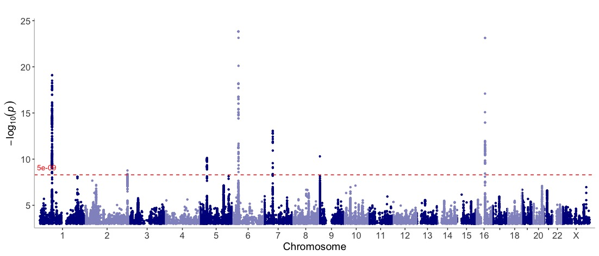
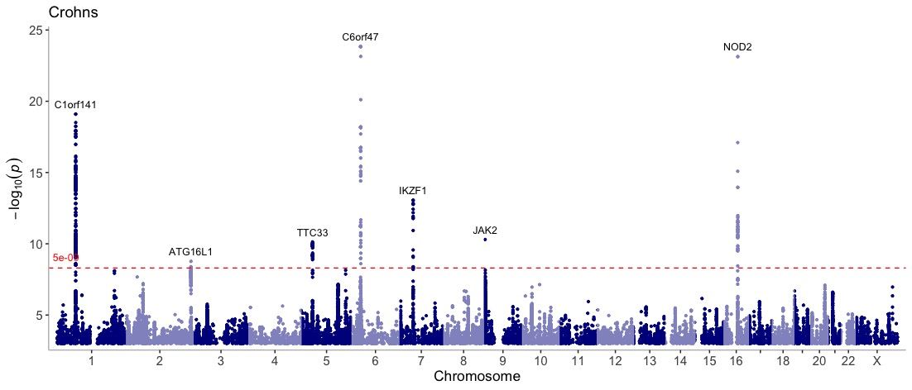
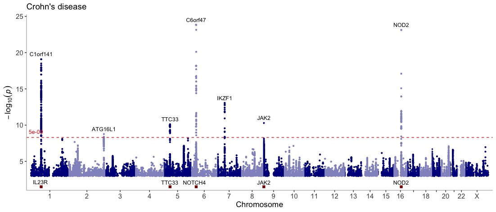
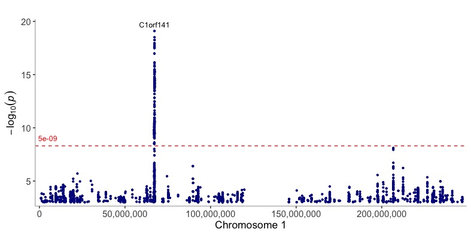
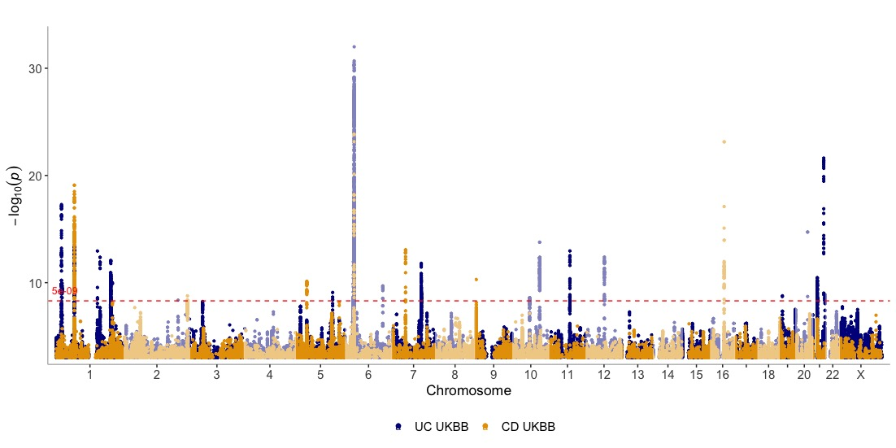
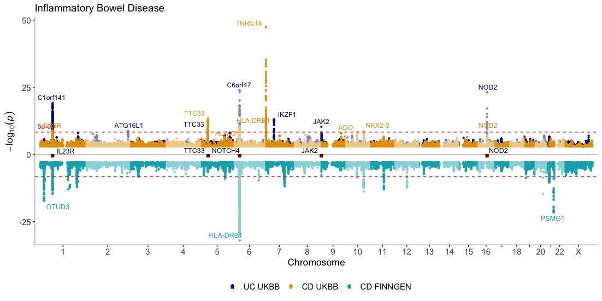
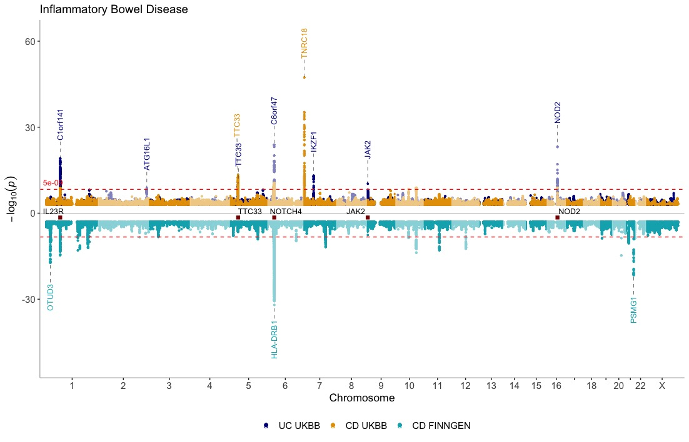
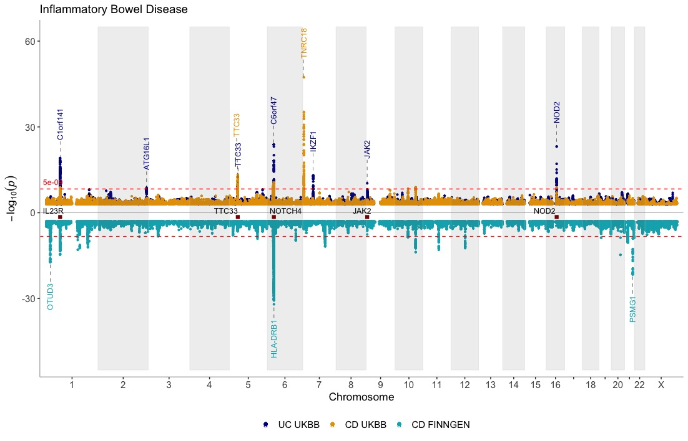
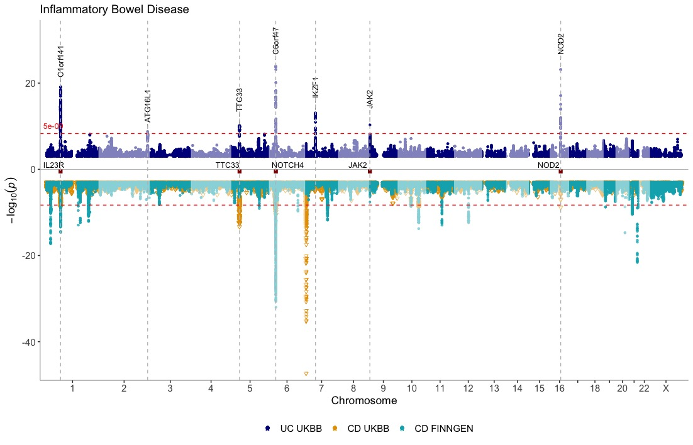

% %
This needs updating!
manhattan
Displays GWAS results over the entire genome.
Get an overview of the in-built Crohn’s GWAS results
(CD_UKBB):
manhattan(CD_UKBB)
Annotate the lead/index variants (with p-values below 5e-9) with their nearest gene and add a title:
manhattan(CD_UKBB,
annotate = 5e-09,
title = "Crohn's disease")
Display genes of interest at the bottom of the Manhattan plot to get a visual representation of their position relative to association peaks:
genes = c("IL23R","NOTCH4","NOD2","JAK2","TTC33")
manhattan(CD_UKBB,
annotate = 5e-09,
title = "Crohn's disease",
highlight_genes = genes)
View one chromosome only:
manhattan(CD_UKBB,
annotate = 5e-09,
chr = "chr1")
Create a Manhattan of multiple GWAS results (represented as a list) on the same plot

Show three GWAS results on the same plot, using different annotation thresholds for each dataset. Also, add genes of interest to the plot Use the ntop argument to control how many GWAS results are displayed at the top and bottom of the plot:
manhattan(list(CD_UKBB, CD_FINNGEN, UC_UKBB),
legend_labels = c("CD UKBB", "CD FinnGen","UC UKBB"),
annotate = c(5e-9,5e-12,1e-15),
region_size = "3Mb",
ntop = 2,
highlight_genes = genes,
highlight_genes_ypos = -0.5 ,
title = "Inflammatory Bowel Disease")
Make the plot prettier by giving more space to the labels by
extending the yaxis (using ymax and ymin) and
by changing the position and angle of the labels (using
angle and the nudge_y arguments).
manhattan(list(CD_UKBB, CD_FINNGEN, UC_UKBB),
legend_labels = c("CD UKBB", "CD FinnGen","UC UKBB"),
annotate = c(5e-9,5e-12,1e-15),
region_size = "3Mb",
ntop = 2,
highlight_genes = genes,
highlight_genes_ypos = -1.5,
title = "Inflammatory Bowel Disease",
ymax = 65,
ymin = -55,
nudge_y = 12,
angle = 90)
The same plot as above with gray shades/rectangles distinguishing
between chromosomes intead (using theme_gray=T)
manhattan(list(CD_UKBB, CD_FINNGEN, UC_UKBB),
legend_labels = c("CD UKBB", "CD FinnGen","UC UKBB"),
annotate = c(5e-9,5e-12,1e-15),
region_size = "3Mb",
ntop = 2,
highlight_genes = genes,
highlight_genes_ypos = -1.5 ,
title = "Inflammatory Bowel Disease",
ymax = 65,
ymin = -55,
nudge_y = 12,
angle = 90,
theme_grey = T)
Use annotate_with_vline to highlight the association
peaks in the CD_UKBB dataset. Use different
alpha, size and shape for the
three datasets.
manhattan(list(CD_UKBB, CD_FINNGEN, UC_UKBB),
legend_labels = c("CD UKBB", "CD FinnGen","UC UKBB"),
annotate_with_vline = c(5e-9,5e-100,1e-100),
region_size="3Mb",
ntop=1,
highlight_genes = genes,
highlight_genes_ypos = -0.5,
title = "Inflammatory Bowel Disease",
nudge_y = 6,
angle = 90,
alpha = c(1, 1, 0.7),
size = c(1, 1.5, 0.9),
shape = c(19,6,19),
ymax=33)